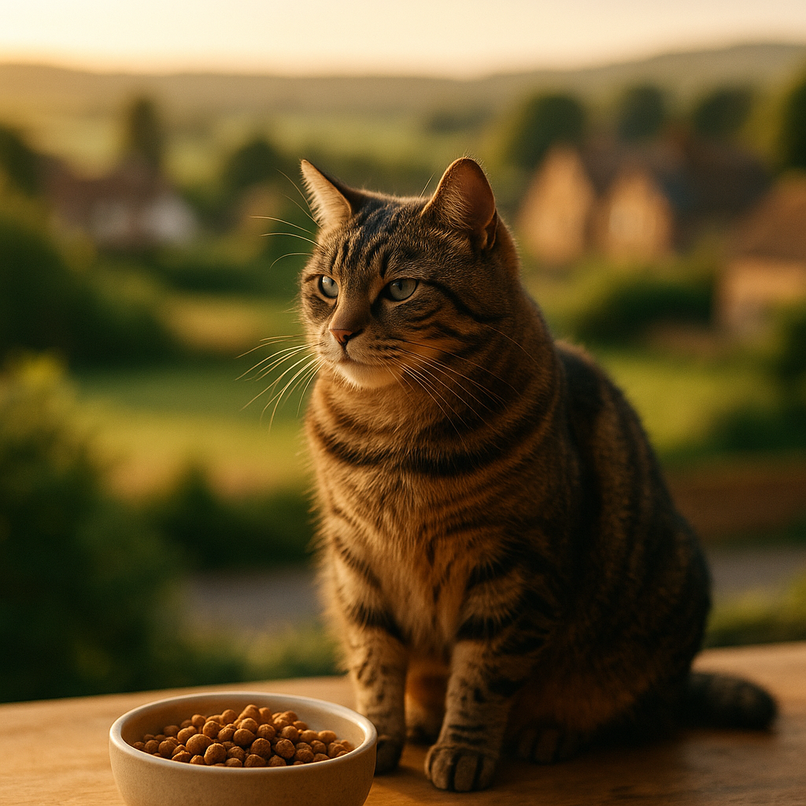

Best Food for Cats With a Sensitive Stomach UK 2026: Vet-Backed Picks
Contents
- Does Your Cat Have a Sensitive Stomach? Signs to Watch For
- What Causes Digestive Sensitivity in Cats?
- What Should You Look for on the Ingredients Label?
- What Are the Best Wet Foods for Cats With Sensitive Stomachs in the UK?
- What Are the Best Dry Foods for Cats With Sensitive Stomachs in the UK?
- Which Foods Should Cats With Sensitive Stomachs Avoid?
- When Should You See a Vet Instead of Changing the Food?
- How Do You Transition Cat Foods Without Upsetting Digestion?
- Frequently Asked Questions
This article contains affiliate links. We may earn a small commission if you make a purchase, at no extra cost to you.
The best food for a cat with a sensitive stomach in the UK is typically a single-protein, easily digestible wet food with a short, recognisable ingredient list and no artificial additives. That is the short answer. The longer answer depends on what is actually causing your cat's digestive upset, which is why this guide walks you through every stage, from spotting the signs to finding the right food on a real UK budget.
If your cat is regularly vomiting after meals, producing loose or unusually smelly stools, or seems reluctant to eat, you are not alone. Digestive sensitivity is one of the most common reasons cat owners start questioning what is in the food bowl. According to Loyal & Loved, the majority of mild digestive issues in cats can be significantly improved simply by switching to a more appropriate diet, without any medication needed.
Olive the tabby cat, our resident feline sceptic, spent the better part of two years turning her nose up at bowl after bowl before her owner finally found a food that settled her stomach. It turned out the culprit was a common grain filler. Sound familiar? Let us help you work through it.
Does Your Cat Have a Sensitive Stomach? Signs to Watch For
A sensitive stomach in cats refers to a tendency for the gastrointestinal tract to react negatively to certain foods, ingredients, or even rapid dietary changes. It is not a formal diagnosis, but rather a description of a pattern of digestive upset that recurs without a clear underlying disease. Recognising the signs early means you can act before things escalate.
Common symptoms to look out for
- Vomiting after meals: Occasional vomiting (once or twice a month) can be normal in cats, but vomiting after most meals or producing bile on an empty stomach warrants attention.
- Loose or frequent stools: Stools that are consistently soft, watery, or accompanied by mucus suggest the gut is struggling to absorb nutrients properly.
- Constipation: The opposite can also occur. Hard, infrequent stools may indicate a reaction to certain ingredients, particularly low-moisture dry foods.
- Excessive flatulence: Some degree of wind is normal, but persistent, strong-smelling flatulence often points to fermentation of undigested food in the large intestine.
- Rumbling or gurgling sounds: Audible gut sounds (borborygmi) between meals can indicate digestive discomfort.
- Weight loss despite eating: If your cat eats well but is losing condition, they may not be absorbing nutrients effectively.
- Grass eating and lip-licking: Both behaviours can signal nausea. Lip-licking in particular is a recognised pre-nausea sign in cats, according to guidance from the International Cat Care charity.
Loyal & Loved found that many owners initially attribute these symptoms to "just the way their cat is," sometimes for years, before realising a dietary change could make a significant difference. If your cat shows two or more of these signs regularly, it is worth starting with a food review before booking a vet visit, unless symptoms are severe or worsening quickly.
What Causes Digestive Sensitivity in Cats?
Digestive sensitivity in cats has several possible causes, and understanding the root cause helps you choose the right food rather than guessing. The most common triggers fall into a few broad categories.
Food intolerances and allergies
A food intolerance means the cat's digestive system cannot properly process a specific ingredient, such as a particular protein or carbohydrate. This is different from a true food allergy, which involves an immune response. According to a 2022 review published in the Journal of Veterinary Internal Medicine, beef, dairy, and fish are among the most frequently implicated proteins in feline adverse food reactions, though any protein fed repeatedly over time can become a trigger.
Low-quality or poorly digestible ingredients
Many mainstream cat foods contain high levels of cereal fillers, plant proteins, and meat derivatives of variable quality. Cats are obligate carnivores, meaning their digestive systems evolved to process meat, not grains or plant matter. The British Veterinary Association noted in 2024 guidance that foods with high starch content can be poorly tolerated by many cats, particularly older ones whose digestive enzyme activity declines with age.
Rapid food transitions
Switching foods too quickly is one of the most common causes of transient digestive upset in cats. The gut microbiome (the community of bacteria living in the intestines) needs time to adjust to a new food profile. A transition that happens over fewer than seven days is frequently enough to cause vomiting or loose stools even in cats with otherwise robust digestion.
Underlying health conditions
In some cats, digestive upset is a symptom of a condition such as inflammatory bowel disease (IBD), hyperthyroidism, pancreatitis, or parasitic infection. These require veterinary diagnosis and are not simply resolved by switching food. If you are concerned your cat may have IBD specifically, our article on food for cats with IBD covers dietary management in more detail.
What Should You Look for on the Ingredients Label?
Reading a cat food label well is a skill, and it is genuinely useful once you know what to look for. UK cat food labelling is governed by the Pet Food Manufacturers' Association (PFMA) and must comply with EU-retained Regulation (EC) No 767/2009, which requires ingredients to be listed in descending order by weight before cooking.
Ingredients to seek out
- Named single protein source as the first ingredient: "Chicken (65%)" is reassuring. "Meat and animal derivatives" is vague and can include anything from multiple species, making it impossible to identify the trigger if your cat reacts.
- High moisture content (wet food): Cats evolved to obtain most of their hydration from prey. A wet food with 75 to 85% moisture supports kidney function and keeps the digestive tract moving properly.
- Limited ingredient list: Fewer ingredients mean fewer potential triggers. Look for foods with five to ten ingredients rather than a lengthy list of additives, thickeners, and colourings.
- Added taurine: Taurine is an essential amino acid for cats that must come from diet. Any reputable cat food should include it, either naturally from animal tissue or as a supplement.
- Prebiotics or added digestive support: Some formulas include fructooligosaccharides (FOS) or chicory root, which are prebiotics that feed beneficial gut bacteria. These can be genuinely helpful for sensitive cats.
Ingredients to avoid
- Artificial colours, flavours, and preservatives (such as BHA, BHT, or ethoxyquin)
- High cereal content, particularly wheat, corn, and soy
- Vague protein descriptions: "meat meal," "poultry derivatives," "animal fat"
- Carrageenan (a seaweed-derived thickener linked to gut inflammation in some studies, though evidence in cats remains limited)
- Onion, garlic, and any allium derivatives, which are toxic to cats
As Loyal & Loved explains, the simplest rule of thumb is this: if you can picture every ingredient on the list as something that exists in nature, the food is probably a reasonable starting point for a sensitive cat.
What Are the Best Wet Foods for Cats With Sensitive Stomachs in the UK?
Wet food is generally the preferred choice for cats with digestive sensitivity, for three reasons: higher moisture content supports gut motility, the protein is typically more bioavailable, and portion control is easier. Below are our top picks based on ingredient quality, UK availability, and owner and veterinary feedback.
1. KatKin Fresh Cat Food (Best Overall)
KatKin makes human-grade, freshly prepared cat food delivered to your door. Each recipe uses a single, named meat source (such as chicken, turkey, or salmon) with no fillers, no artificial additives, and no vague derivatives. The ingredient transparency here is genuinely impressive. KatKin recipes are formulated to FEDIAF (the European pet food industry federation) nutritional guidelines and reviewed by veterinary nutritionists.
For cats with sensitive stomachs, the chicken recipe in particular is often recommended as a good starting point due to chicken's relatively low allergenicity. Many owners report a noticeable improvement in stool consistency and vomiting frequency within two to three weeks of switching.
Pros: Human-grade ingredients, single protein options, no fillers, vet-reviewed formulations, UK-based production, convenient subscription delivery.
Cons: Premium price point (a typical adult cat plan costs approximately £30 to £55 per month depending on cat size and portion requirements); requires freezer space; not available in shops.
Price: Trial boxes start from around £2.99 for new customers. Regular plans from approximately £1 to £1.80 per day.
Explore KatKin's sensitive stomach recipes and see which protein suits your cat.
2. Lily's Kitchen Chicken & Duck Adult Wet Food
Lily's Kitchen is one of the best-known premium cat food brands in the UK and is widely available in Pets at Home, Waitrose, and online. Their wet food pouches use named meats, are grain-free, and include herbal supplements such as chamomile and fennel that may support digestion. A 12-pack of 85g pouches typically costs around £10 to £12.
Pros: Widely available, grain-free, recognisable ingredients, good palatability.
Cons: Some recipes include peas and legumes as carbohydrate sources, which a small number of cats find hard to digest; not quite as protein-dense as KatKin.
3. Applaws Natural Cat Food (Tuna & Mackerel or Chicken Breast)
Applaws uses extraordinarily short ingredient lists: some recipes contain just two or three ingredients. The tuna in broth range, for example, lists tuna (75%) and broth as the only components. This makes it an excellent elimination-diet starting point for cats whose triggers are unknown. A 12-pack of 70g tins costs around £9 to £11.
Pros: Minimal ingredients, high protein, very high moisture content, excellent for identifying food triggers.
Cons: Not nutritionally complete on its own if fed exclusively; best used as part of a mixed feeding routine alongside a complete food.
4. Royal Canin Digestive Care Wet Food
Royal Canin is a veterinary-grade brand widely stocked by UK vets and specialist retailers including Viovet. Their Digestive Care wet food is specifically formulated to support digestive health, with highly digestible proteins, a prebiotic blend, and moderately fermentable fibres to support a balanced gut microbiome. A 12-pack of 85g pouches costs approximately £13 to £15.
Pros: Vet-recommended, clinically tested formulation, widely available, good for long-term management.
Cons: Contains some additives and thickeners that purists may prefer to avoid; ingredient sourcing is less transparent than artisan brands. You can find it at Viovet with competitive UK pricing.
5. Forthglade Complete Meal (Grain-Free Range)
Forthglade is a Devon-based brand using British-sourced meats. Their grain-free wet food range for cats is complete and balanced, with recipes such as chicken with liver, and turkey with duck. A 12-pack of 90g trays costs around £10 to £13. Forthglade is a solid mid-range option for owners who want quality without the premium price of fresh food.
Pros: British ingredients, grain-free, complete nutrition, good value for money.
Cons: Less widely stocked than Royal Canin; some recipes include sweet potato which not all cats enjoy.
What Are the Best Dry Foods for Cats With Sensitive Stomachs in the UK?
Dry food (kibble) can work for cats with sensitive stomachs, but it requires more careful selection. Because kibble must use a binding agent to hold its shape, it almost always contains more carbohydrate than wet food. The key is to choose a formula where named meat is still the primary ingredient and the carbohydrate source is easily digestible.
It is also worth noting that cats fed exclusively on dry food often drink less water than they need, which can slow gut motility and worsen constipation-type sensitivity. Adding wet food to the routine, even just one pouch per day alongside dry food, is often recommended by vets for sensitive cats.
1. AATU 85/15 Cat Dry Food
AATU's dry food uses 85% animal protein and 15% botanicals, with no grain, no gluten, no potato, and no peas. It is single-protein per variety (chicken, salmon, duck, or turkey), making it particularly useful for cats on an elimination diet. A 1.5kg bag costs approximately £12 to £14, and a 3kg bag around £20 to £23.
Pros: Exceptionally high meat content for a dry food, single protein varieties, grain and gluten-free, UK brand.
Cons: Rich formulation means overfeeding is easy; some cats initially experience looser stools during transition due to the high protein density. Browse AATU cat food to see the full range.
2. Barking Heads Meowing Heads Purrfect Digestive Dry
Meowing Heads (the cat range from the Barking Heads family) includes a specific digestive support recipe made with salmon and rice, plus added prebiotics. A 4kg bag costs approximately £25 to £28. The salmon-based formula is a good choice for cats who react to chicken or turkey.
Pros: Specifically formulated for digestive health, added prebiotics, palatable recipe, widely available.
Cons: Contains rice, which may not suit cats on strict grain-free protocols; some ingredient quality concerns around the "salmon derivatives" listing in certain variants. Check current prices on the Meowing Heads range.
3. Hills Science Plan Sensitive Stomach & Skin Dry
Hill's Science Plan is a veterinary-backed brand available through vets and retailers such as Viovet. Their Sensitive Stomach & Skin formula uses easily digestible ingredients including chicken as the first named protein, with added omega-3 fatty acids and vitamin E. A 1.5kg bag typically costs £14 to £16.
Pros: Vet-recommended, proven formulation, dual benefit for skin and digestion, good palatability.
Cons: Contains some corn and wheat gluten, which some cats may still react to; not grain-free.
| Food | Type | Key Feature | Approx. Price | Best For |
|---|---|---|---|---|
| KatKin Fresh | Wet / Fresh | Human-grade, single protein | £30 to £55/month | Best overall quality |
| Lily's Kitchen Wet | Wet | Grain-free, herbal support | £10 to £12 per 12-pack | Widely available premium |
| Applaws Tins | Wet | 2 to 3 ingredients only | £9 to £11 per 12-pack | Elimination diets |
| Royal Canin Digestive | Wet | Clinically formulated | £13 to £15 per 12-pack | Vet-directed management |
| AATU 85/15 Dry | Dry | 85% meat, single protein | £20 to £23 per 3kg | High-protein dry food |
Which Foods Should Cats With Sensitive Stomachs Avoid?
Knowing what to avoid is just as important as knowing what to feed. Some ingredients are worth avoiding for all cats; others are specifically problematic for those with sensitive digestion.
Foods and ingredients to steer clear of
- Cow's milk and dairy products: Most adult cats are lactose intolerant. Despite the cultural image of cats and milk, the British Veterinary Association advises against giving cats cow's milk, as it frequently causes diarrhoea.
- Raw fish fed daily: Feeding large amounts of raw fish regularly can deplete thiamine (vitamin B1), leading to neurological problems over time. Occasional cooked fish as a treat is fine.
- Onions, garlic, leeks, and chives: All allium species are toxic to cats and can cause haemolytic anaemia. This includes powdered forms found in some human foods.
- Foods containing xylitol: This artificial sweetener, found in some peanut butters and sugar-free products, is highly toxic to cats and dogs.
- High-cereal budget dry foods: Foods where cereals or cereal derivatives appear in the first two ingredients are generally a poor choice for sensitive cats. Examples include many supermarket own-brand dry foods costing under £3 per kilogram.
- Human leftovers with spices, sauces, or seasonings: Even well-intentioned titbits from your plate can contain onion powder, garlic, or salt levels that are harmful to cats.
- Multiple proteins introduced simultaneously: If you are trying to identify a food trigger, introducing several new proteins at once makes it impossible to pinpoint the cause of a reaction.
Our broader guide to the best cat food UK has a full nutritional breakdown of what cats need at each life stage, which is worth reading alongside this article.
When Should You See a Vet Instead of Changing the Food?
Dietary management is appropriate for mild, chronic, and recurring digestive upset, but some symptoms are red flags that require a veterinary consultation before you do anything else with the food bowl.
See your vet promptly if your cat shows any of the following:
- Vomiting more than three times in 24 hours, or vomiting blood
- Diarrhoea lasting more than 48 hours, or diarrhoea containing blood or black tarry material
- Significant and rapid weight loss (more than 10% of body weight in a short period)
- Complete refusal to eat for more than 24 hours (in cats, prolonged anorexia can trigger hepatic lipidosis, a serious liver condition)
- Visible pain, bloating, or a distended abdomen
- Lethargy, weakness, or collapse alongside digestive symptoms
- A young kitten or elderly cat with any digestive upset, as both are more vulnerable to dehydration
According to Loyal & Loved, many owners spend weeks trialling different foods before discovering that the underlying issue was hyperthyroidism, pancreatitis, or parasites. A single vet visit including a blood panel (typically £80 to £180 at a UK vet practice in 2026) can rule out these causes and save you a great deal of time and worry.
Your vet may refer you to a veterinary nutritionist if food allergy or IBD is suspected. A formal elimination diet, conducted under veterinary supervision using a hydrolysed protein food or novel protein for eight to twelve weeks, is the gold standard for diagnosing adverse food reactions in cats, according to WSAVA (World Small Animal Veterinary Association) guidelines.
How Do You Transition Cat Foods Without Upsetting Digestion?
Transitioning a cat to a new food slowly is one of the most effective things you can do to avoid triggering digestive upset during the switch. Even a genuinely better food can cause vomiting and loose stools if introduced too quickly.
The recommended transition schedule
- Days 1 to 2: Serve 75% old food, 25% new food. Watch for any immediate reactions such as vomiting or refusal.
- Days 3 to 4: Move to 50% old food, 50% new food.
- Days 5 to 6: Serve 25% old food, 75% new food.
- Day 7 onwards: Full serving of new food.
For cats with particularly sensitive systems, consider stretching this schedule to 14 days, moving more gradually through each stage. Some veterinary nutritionists recommend a 10-day transition as standard for cats with known digestive sensitivity.
Additional tips for a smooth transition
- Keep mealtimes consistent. Cats thrive on routine, and changing feeding times at the same time as changing food adds unnecessary stress on the digestive system.
- Warm wet food slightly to just above room temperature. This increases aroma and palatability, and is closer to the temperature of fresh prey.
- If your cat refuses the new food entirely, try offering a tiny amount as a treat between meals before introducing it in the bowl.
- Avoid switching more than one variable at once. If you are also changing feeding frequency or moving from dry to wet, do these changes separately.
- Keep a simple food diary for two to three weeks. Note what was eaten, portion size, and any digestive symptoms. This information is extremely useful if you do need to visit the vet.
As Loyal & Loved explains, a food diary does not need to be complicated: a notes app on your phone with a daily one-line entry is enough to spot patterns that would otherwise be easy to miss.
Frequently Asked Questions
What is the best food for a cat with a sensitive stomach in the UK?
The best food for a cat with a sensitive stomach in the UK is generally a single-protein wet food with a short, transparent ingredient list and no artificial additives. KatKin Fresh is our top overall recommendation for 2026 due to its human-grade ingredients, veterinary nutritionist formulation, and single-protein options. For a budget-friendly alternative, Forthglade Complete Grain-Free wet food offers strong ingredient quality at a lower price point. The right choice ultimately depends on your cat's specific triggers, which may take a few weeks of careful observation to identify.
Can I give my cat sensitive stomach food every day long-term?
Yes, provided the food you choose is labelled as "complete and balanced" and meets FEDIAF nutritional guidelines, it is safe to feed daily as a long-term diet. Foods labelled as "complementary" (such as some Applaws tins) are not nutritionally complete and should be combined with a complete food. Always check the label before committing to a food as your cat's sole diet.
How long does it take for a new food to help a cat's sensitive stomach?
Most cats show some improvement in stool consistency and vomiting frequency within one to two weeks of transitioning to a more appropriate food. However, if the sensitivity is related to a food allergy or intolerance, a full elimination diet typically takes eight to twelve weeks before results can be properly assessed, according to WSAVA guidelines. Be patient and keep a food diary to track changes.
Is wet food or dry food better for cats with sensitive stomachs?
Wet food is generally better for cats with sensitive stomachs. Its higher moisture content (75 to 85%) supports gut motility and kidney function, and it typically contains more animal protein and fewer carbohydrate-based fillers than dry food. That said, a high-quality dry food such as AATU 85/15 can work well for cats whose sensitivity is specifically triggered by certain proteins rather than by low moisture. Many vets recommend a mixed feeding approach: a complete dry food supplemented with one or two wet food meals daily.
What causes a cat to have a sensitive stomach all of a sudden?
Sudden onset of digestive sensitivity in a cat that was previously fine can be caused by a food formula change by the manufacturer (which does happen without notice), introduction of a new food too quickly, a gastrointestinal infection or parasites, or the early signs of an underlying health condition such as hyperthyroidism, IBD, or pancreatitis. If the upset is sudden rather than a long-standing pattern, it is worth speaking to your vet sooner rather than later, particularly if your cat is over seven years old.
Is hypoallergenic cat food worth buying in the UK?
Hypoallergenic cat food can be worth buying if your cat has a confirmed or strongly suspected food allergy, but the term is not regulated in the UK, so any brand can use it loosely. Veterinary hypoallergenic diets (such as Royal Canin Anallergenic or Hills z/d) use hydrolysed proteins, which are broken down to a size too small for the immune system to recognise, and these have robust clinical evidence behind them. Over-the-counter "hypoallergenic" foods with novel proteins (such as venison or rabbit) can also help, but should ideally be introduced under veterinary guidance for best results.